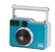

Collimated Gamma-Ray Imaging Spectrometer
방사선원의 방향성 탐지를 위한 최고의 솔루션: P Series 는 원자력발전소와 같이 여러 선원들이 혼재되어 있는 상황에서 특정 선원을 찾아낼 때 적합한 모델입니다. 텅스텐 콜리메이터가 내장되어 주위에 강한 선원이 있는 경우에라도 특정방향의 관심 선원을 손쉽게 찾아낼 수 있습니다.
- 실시간 감마선 스펙트럼, 핵종판별 및 이미징
- 감마선의 핵종별 정량화 계산
- 공기/물에 대한 방수 및 방진
- 파이프 또는 덕트에서의 방사선 정량적 해석
- 위급상황 대응, 사고 및 원자력 발전소 정비

Features
- - Isotopic quantification of gamma-ray sources
- - Real-time spectroscopy, ID, and imaging
- - Air/water tight for easy decontamination
Applications
- - Waste characterization
- - Quantitative analysis of radiation in pipes and ducts
- - Emergency response, incidents, and outages
| Model | Resolution (@662 keV) |
Spectral Range (keV) |
Imaging Range (keV) |
Coll. (W*) |
CZT Vol. (cm3) |
Weight (lbs.) |
Battery (hrs.) |
IP Rating |
Temp. (°F) |
Startup Time (분) |
User Interface |
|
|---|---|---|---|---|---|---|---|---|---|---|---|---|
 |
P100 | < 1.1 | 50 to 3000 | 250 to 3000 | 1 | >6 | 25.0 | >7 | IP65 | -4 to 122 | < 2 | Tablet |
| P100S | < 1.1 | 50 to 3000 | N/A | 1 | >4.5 | 25.0 | >7 | IP65 | -4 to 122 | < 2 | Tablet / Webpage |